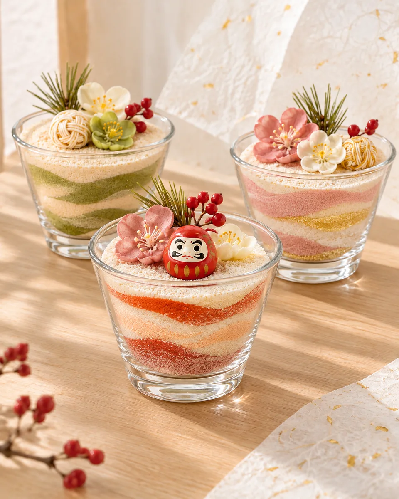

新年を彩る季節限定の「お正月サンドアート」が登場しました。松・梅・だるま・水引・南天をあしらった、新春らしい華やかな作品を、色とりどりの砂を重ねて手作りできる体験です。玄関やリビングに飾るお正月飾りとして、年始のギフトとして、家族みんなの思い出づくりとして——この冬だけの特別なサンドアートをご紹介します。
お正月サンドアートとは
サンドアートは、透明な器に色の砂を少しずつ重ねて模様を作っていくクラフトです。お正月バージョンでは、重ねた砂の上に和の縁起物——松・梅の花・だるま・水引飾り・南天の実などをあしらい、新春にふさわしい華やかな一品に仕上げます。糊や特別な道具は使わず、砂を注いで飾るだけなので、3歳のお子さまからご年配の方まで、どなたでも失敗なく作れます。
新春を彩る3つのデザイン
今回のお正月サンドは、落ち着いた和の配色で仕上げた3種類をご用意しました。
- 抹茶グリーン：松と白梅をあしらった、凛とした緑の層
- 紅白ピンク×金：梅の花と水引、金の砂で華やかに
- 紅 × だるま：だるまと紅白梅で、縁起よく新年らしく
砂の色の重ね方や縁起物の選び方で、一人ひとり違う作品に仕上がります。お好みの配色を選んで、世界にひとつの新年飾りを作りましょう。
体験の流れ（約30〜60分）
特別な準備は必要ありません。当日は手ぶらでお越しいただけます。
- お好きな砂の色を選ぶ
- 器に少しずつ重ねて、模様を作る
- 松・梅・だるま・水引などの縁起物を飾る
- 完成！ そのままお持ち帰りいただけます
こんなシーンにおすすめ
- お正月飾りに：玄関・リビングに飾って新年を迎える
- 年始のギフト・ご挨拶に：手作りの新春の贈り物として（オーダーメイドも承ります）
- 親子・家族の思い出づくりに：冬休みの工作にも
- 高齢者施設の正月レクに：季節を感じる手仕事として（高齢者施設のレクについて）
- 企業の新年会・賀詞交歓会のアトラクションに（企業・施設向けページ）
出張・オンライン、どちらも対応
福岡・博多を拠点に全国へ出張します。遠方の方や少人数の場合は、材料キットが届くオンライン体験も選べます。クリスマスのあとは、ぜひお正月サンドで新年の準備を。季節のサンドアートはクリスマスサンドも人気です。
お正月サンドアート体験のご予約・ご相談
季節限定の体験です。日程・人数・ご希望をお気軽にご相談ください。
施設の正月レク・企業の新年会など、出張開催のお見積もりも承ります。
まとめ
お正月サンドアートは、松・梅・だるま・水引であしらう、新春らしい季節限定の手作り体験です。お正月飾り・年始のギフト・家族の思い出づくり、そして施設や企業の新年イベントにも。この冬だけの特別な一品を、ぜひ作りにいらしてください。
まずはお気軽にご相談ください
24時間以内に返信いたします。ご予約・日程・人数のご相談はLINEが便利です。全国出張OK、遠方はオンラインでも対応します。
原野 玲未REMI HARANO
日本サンドアート協会 認定講師 / Webデザイナー
福岡県在住、5児の母。企業から福祉施設まで、年間100件以上の出張ワークショップを開催しています。
「誰でも簡単に、美しい作品が作れる」をモットーに、参加者全員が笑顔になれる時間を心がけています。